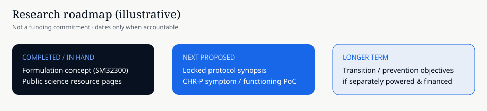

Route 1
Psychiatry & evidence
What does clinical high risk mean? What can existing care offer? What have studies found, and which questions remain unanswered? Start with the clinical context, then explore the research.
Start with a question
Science
Understanding our research means understanding two connected areas: the psychiatric conditions we are investigating, and the compounds and formulations being studied. Explore either route, then follow the evidence behind individual statements.
Route 1
What does clinical high risk mean? What can existing care offer? What have studies found, and which questions remain unanswered? Start with the clinical context, then explore the research.
Start with a question
Route 2
Cannabis is a plant containing many compounds. CBD and THC are different molecules with different effects. Learn how compounds, products, formulations and clinical evidence fit together.
Start with a question
Our programme. NWPT-SM32300 is investigational. General cannabinoid research does not establish that it is effective. The Programme Room explains what has been studied, what is planned and what remains unknown; the NWPT formulation section explains what the formulation is designed to do and what has been measured.
Clinical high-risk / ultra-high-risk constructs identify people with elevated risk of transitioning to psychosis relative to the general population — often with attenuated psychotic symptoms.
Important: A risk designation is not a diagnosis of schizophrenia and does not mean any individual will inevitably develop psychosis. Transition rates vary by enrichment, era, and care setting.
UK NICE guidance for people at increased risk emphasises specialist assessment, psychological therapy, treatment of coexisting conditions, and monitoring — and does not recommend antipsychotic medication with the aim of preventing psychosis (CG155 / CG178). Recent prevention meta-analyses remain cautious about existing interventions. That leaves an open scientific frontier for carefully designed studies.
For many young people and families, the practical questions are urgent: how to reduce distress from attenuated symptoms, support functioning, and — where possible — lower the chance that frank psychosis becomes established. Those goals are related but not identical. A credible research programme states which question it answers at each stage.
Full labelled sources and figures: Why early intervention matters.
NWPT-SM32300 is NWPharmaTech’s investigational 300 mg CBD micellar-emulsion softgel. The planned Phase 2B study is designed to evaluate dose response, symptoms, safety and tolerability, and inform the next stage of development.
Effectiveness in this population has not been established. Prevention or delay of transition to psychosis is a longer-term question that must be separately powered if claimed as primary.


Can a well-characterised CBD formulation, studied under pharmaceutical-sponsor governance, show a clear dose response and improve measurable symptoms with acceptable safety and tolerability for people who meet defined CHR-P criteria — and, in later, adequately powered work, help answer whether transition can be delayed or prevented?
Field literature shows elevated, heterogeneous transition risk and motivates early-intervention research. It does not establish that NWPT-SM32300 works. Findings from other CBD products or academic CBD studies are hypothesis-generating only; they are not evidence generated with this formulation.
| Question | What is known today | What would establish it |
|---|---|---|
| Is CHR-P a meaningful clinical construct? | Supported by field research: risk is elevated and heterogeneous | Continued careful use of validated criteria; not a diagnosis of schizophrenia |
| Is there an established labelled pharmacotherapy to prevent psychosis in CHR-P? | Not as standard care in the NICE at-risk frameworks we cite; pharmaceutical prevention remains investigational (field context) | Regulatory-labelled claims after adequate evidence |
| Does NWPT-SM32300 show dose response / symptom benefit with acceptable safety in CHR-P? | Not established — investigational; planned Phase 2B in preparation | Pre-specified clinical evaluation with locked endpoints and transparent analysis |
| Does it prevent or delay transition to psychosis? | Not established — longer-term research question | Adequately powered, long-follow-up trial if pursued as a primary objective |
| Exposure / formulation characterisation vs a reference CBD product | Early comparative work has been described by the company; numerical figures are not published here yet | Formal study reports and tables for the formulation actually used |
NWPharmaTech remains pharmaceutical sponsor for clinical development, safety, CMC, and regulatory strategy related to this programme. Investigators, ethics committees, and regulators retain their independent roles. Community participants do not decide protocol, dose, endpoints, safety, or regulatory submissions.
The delivery problem
CBD dissolves poorly in water. Taken by mouth on an empty stomach, only about 6% of a dose is estimated to reach the bloodstream, and much is broken down by the liver first. A high-fat meal increases absorption several-fold, which makes exposure depend on what someone has eaten. Source: Perucca and Bialer 2020 Source: Taylor et al. 2018
The design of NWPT-SM32300
NWPT-SM32300 is a 300 mg oral softgel capsule. Its contents are a self-emulsifying (micellar) lipid formulation: when the capsule opens in the gut, the contents are designed to disperse into very small droplets, a way of carrying poorly water-soluble medicines. A fixed-strength capsule also avoids measuring doses from an oil.
Not yet shown
Whether this formulation gives more consistent absorption than other CBD products, and how food affects it, has not been published. The Phase 1 study measured absorption; its results are not yet published. No study has measured how much reaches the brain.

The following visuals are conceptual illustrations only. They do not show a proven mechanism of action, measured brain delivery, or clinical efficacy for NWPT-SM32300.


| Horizon | Science intent | Status |
|---|---|---|
| Now | Public science pages that separate field context from programme evidence | Published |
| Near | Clinical synopsis finalisation; numerical exposure and safety figures published only when formal study reports are available | In development |
| Near | Prepare the planned Phase 2B evaluation of dose response, symptoms, safety and tolerability in defined CHR-P populations | In development |
| Later | Larger transition-to-psychosis objectives only if separately powered | Later |
Programme financing, if pursued, would be private and eligibility-gated — not open subscription on this site. See the FAQ, public synopsis, funding use, and programme brief.